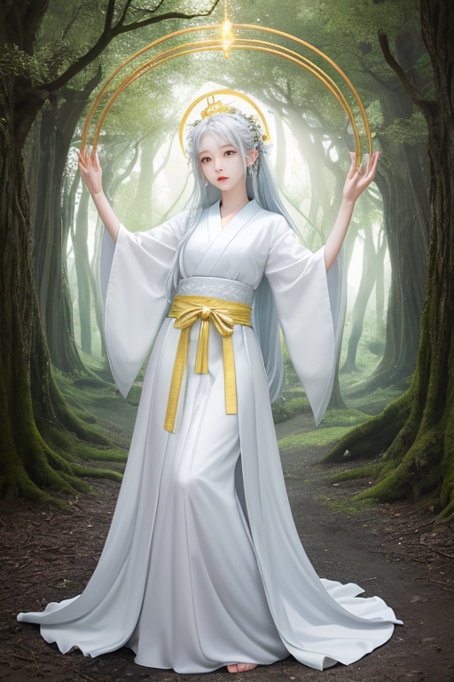
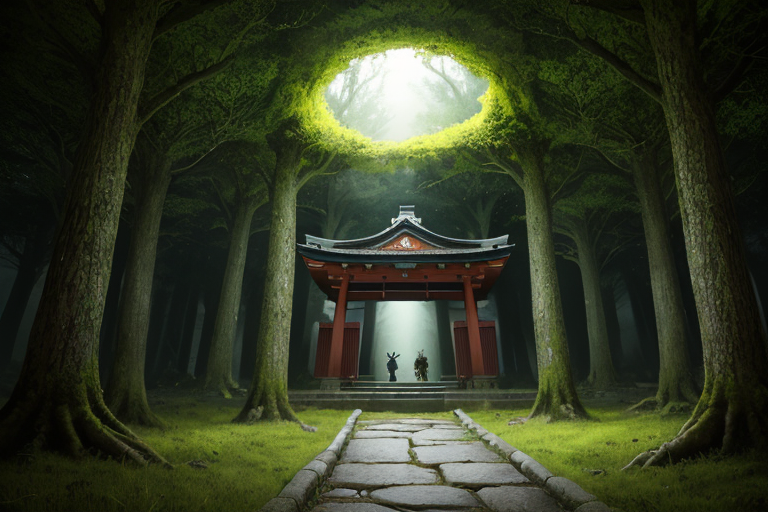

第一章 現実の三重
あなたはまだ気づいていない。この土地にも、王がいることを。
伊勢神宮の森は、ただ深い。参道を覆う杉の巨木たちは、千年の祈りを吸い上げ、吐き出している。その空気は重く、清浄で、訪れる者の雑念を濾過する。しかし、その静謐の底で、何かが眠っている。歪みの列島のこの地は、二つのプレートがせめぎ合う場所だ。地中には絶え間ない力の蓄積があり、それは神域の荘厳さとは別種の、物理的な緊張として存在する。
熊野古道、伊勢路。巡礼者たちが踏みしめる石畳は、苔に覆われて滑らかだ。彼らは願いを胸に、一歩一歩進む。その足元の深く、地殻はゆっくりと、しかし確実に歪みを増している。歪みは蓄積され、やがて解放を求める。それがこの列島の定めだ。
王はそれを知っている。歪みを無くすことはできない。できるのは、ほんのわずかな調整だけだ。祈りの声が森に満ち、赤福の甘さが舌の上でとけるその日常の裏側で、王は静かに、封じられた力の均衡を見守り続けている。

第二章 歪みの兆候
伊勢神宮の森の静寂が、ほんのわずか、濁り始めていた。それは音ではない。空気の密度、木々の息づかい、参道を覆う清冽な「気」の流れに、目に見えぬ澱が生じているのだ。神域王ミエリア・サンクトゥムは、内宮の森の奥、人目に触れぬ空間に立ち、その変化を感知していた。彼の眼前には、幾重にも張り巡らされた光の結界──鳥居を模した幾何学模様が、微かに、しかし確実に脈打っている。それは痛みのような振動だった。
「結界に負荷がかかっています」
主席妖精サンクティアが厳粛に告げた。その声には、いつもより深い憂いが宿っていた。
「巡礼者の祈りは増えています。しかし、その祈りの質が……分散している。多くが自己の安寧のみを求めるものに偏りつつあります」
祈りは力だ。この王国では、無数の祈りが結界を支え、地殻の歪みをなだめる潤滑油となってきた。だが、祈りが「誰のため」かを見失い、内へ内へと向かう時、それは純粋な支えではなく、重荷に変わりうる。自己完結した願いの波は、神域全体を包む広大な結界を、一点に押し潰そうとする圧力となる。
ミエリアは目を閉じた。熊野古道の伊勢路を歩く巡礼者たちの足音、鳥羽水族館で歓声を上げる子供たち、赤目四十八滝に打たれる水音。それらすべてが、この土地の「巡礼の波」だ。その波が乱れ、結界に亀裂が走れば、調整可能な歪みの幅を超える時が来る。彼が封じているものは、単なる地殻のエネルギーではない。この神域そのものが内包する、太古の「何か」なのだ。
彼は金色の瞳を開いた。封じられた力が、結界の裏側で目覚めようとする胎動を、感じ取っていた。

第三章 王の葛藤
伊勢神宮の森の奥、外宮の古殿地。ミエリア・サンクトゥムは、封印の核が埋まる聖域の中心に立っていた。足元からは、鈍く重い鼓動が伝わってくる。それは地殻の歪み以上に、この土地に積もった「祈り」そのものの重さだった。式年遷宮というリズムで更新されながらも、千年を超える人々の願い、悲しみ、歓喜が、神域の地下に沈殿し、濃縮されていた。彼が封じているのは、その膨大な感情の結晶が暴走する「神域そのものの覚醒」だった。
「王よ、結界の圧力が限界に近づいています」
サンクティアの声は、いつにも増して硬かった。
「このままでは、熊野古道を伝う巡礼波を保護する余力がなくなります。あるいは……封を少し緩め、地中の圧力を分散させるか」
緩める？ それは、千年分の祈りを一気に解放することを意味する。どれほどの調整不能な現象を引き起こすか。だが、封じ続ければ、巡礼の路は守れない。祈りを封じ込めることが、巡礼そのものを危険に晒す。矛盾が、彼の内側で冷たい刃のように研ぎ澄まされていく。
祈りは、誰のため？
人々が神域に捧げるその祈りを、このまま封じ込めて沈殿させ続けることが、果たして正しいのか。彼の金色の瞳が、微かに揺れた。
第四章 妖精との対話
「王よ、その問いは、私たち自身への問いでもあります」
サンクティアの声は、いつになく柔らかく、そして重かった。彼女は、伊勢神宮の森を流れる清冽な空気のように、静かに語り始めた。
「式年遷宮。二十年ごとに神殿を建て替え、御神体を遷す。それは、技術の伝承であり、常若の思想です。しかし、もう一つの意味がありました。積もりすぎた『祈り』の力を、建物と共に一旦リセットするため。遷宮の度、古い材は全国の神社へと分け与えられ、祈りも分散されました。それは、巨大な祈りの結晶がこの地に生まれ、暴走することを防ぐ、先人たちの知恵だったのです」
イセリアが続ける。その目には、長い時間の憂いが宿っていた。
「しかし、お伊勢参りが庶民に広まり、熊野古道を歩く巡礼者が増えるほど、祈りの流入は加速しました。私たちは、溢れんばかりの祈りを、この神域の地中深く、静かに封じ込めてきました。それが、私たちの役目でした。歪みの調整とは、物理的な地殻だけでなく、この目に見えぬ祈りの圧力の均衡をも指すのです」
サンクティアは王の金色の瞳をまっすぐに見つめた。
「封じることは、確かに保護です。しかし、封じられた祈りは、巡礼者たちが新たに捧げる祈りとの共鳴を起こし始めています。それは、もはや分散では抑えきれない規模です。祈りは、誰のため？ 人々が神に捧げたその想いは、今、この地そのものを、静かに、しかし確実に変容させようとしています」
第五章 微調整と余韻
ミエリアは、鳥居の向こうに広がる神域の森を見つめた。膨れ上がる祈りの共鳴は、地中に蓄積する歪みと同調し、微かな振動となって伝わってくる。封じることは、保護である。しかし、封じられたものは、いつか必ずその力を問う。彼は静かに右手を掲げた。白と金の光が、鳥居の柱から柱へ、幾重にも張られた見えない封印の網目を、一本、また一本と修復していく。それは、巨大な津波を一秒遅らせるような、些細で巨大な微調整だ。
「祈りは、誰のため？」
彼は囁いた。人々のためか、神のためか、それとも、祈るという行為そのもののためか。答えは出ない。彼ができるのは、この膨大な「祈り」という感情のエネルギーが、地殻を破壊するほどの物理的衝動に変わる前に、その波長をほんの少し分散させ、森の木々の揺れに、風の音に、滝のしぶきに変えていくことだけだった。修復は完了する。森は、かつてよりも深い静寂に包まれた。しかし、ミエリアの胸には、封じたものの重さが、初めての「痛み」として刻まれた。
あなたの町にも、王がいる。